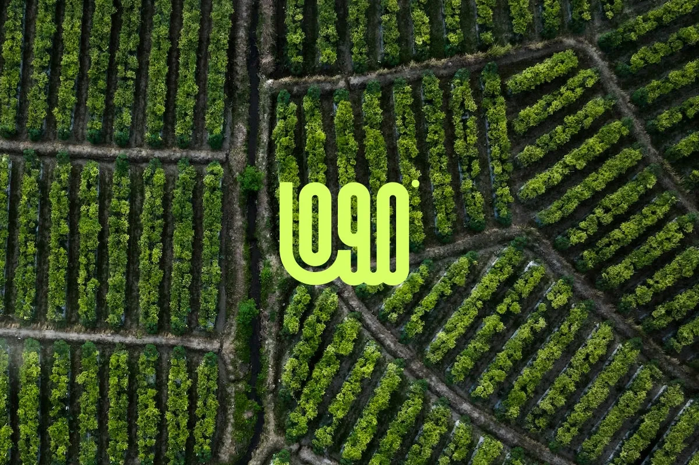

NeuralPlaylist - AI Generated Music Recommendations

Note: This case study is entirely fictional and created for the purpose of showcasing Dante Astro.js theme functionality.
Project Overview: NeuralPlaylist is a cutting-edge web application that redefines music discovery through the power of artificial intelligence. Leveraging advanced algorithms and machine learning, NeuralPlaylist crafts personalized music recommendations based on users’ preferences, moods, and even biometric data.
Objectives
- Develop an intuitive and user-friendly web application that utilizes AI to curate personalized music playlists for users.
- Implement machine learning models that analyze user behavior, preferences, and physiological responses to create dynamic and context-aware music recommendations.
- Provide an immersive and interactive platform that enhances the music listening experience and introduces users to new genres and artists.
Features
- Biometric Mood Analysis:
- NeuralPlaylist incorporates biometric data analysis to understand users’ moods and emotional states.
- The AI algorithms use facial recognition and heart rate data to curate playlists that match users’ current emotional states.
- Personalized Playlists:
- Users receive dynamic and highly personalized playlists based on their music history, preferences, and contextual factors.
- NeuralPlaylist adapts to users’ evolving tastes, introducing them to new genres and artists that align with their musical journey.
- Context-Aware Recommendations:
- The application takes into account contextual factors such as time of day, weather, and location to tailor music recommendations.
- Users receive playlists suited for specific occasions, moods, and environments.
- Collaborative Playlists:
- NeuralPlaylist encourages social interaction by allowing users to create and share collaborative playlists with friends.
- Friends can contribute to the playlist, creating a shared musical experience that adapts to the collective preferences of the group.
- Real-Time Feedback Integration:
- Users can provide real-time feedback on song selections, allowing the AI to continuously refine recommendations.
- The system learns from user interactions to enhance the accuracy of future music suggestions.
Technology Stack
- Frontend: Vue.js for a dynamic and responsive user interface.
- Backend: Flask for handling server-side logic and API integration.
- Database: MongoDB for efficient storage and retrieval of user and music data.
- AI Integration: PyTorch for developing machine learning models for music recommendation and biometric analysis.
Outcome
NeuralPlaylist has redefined the music listening experience by harnessing the power of AI to provide users with hyper-personalized and context-aware playlists. The application not only adapts to users’ musical preferences but also introduces them to new and exciting musical journeys based on their emotions and surroundings.
Note: This case study is entirely fictional and created for the purpose of showcasing Dante Astro.js theme functionality.